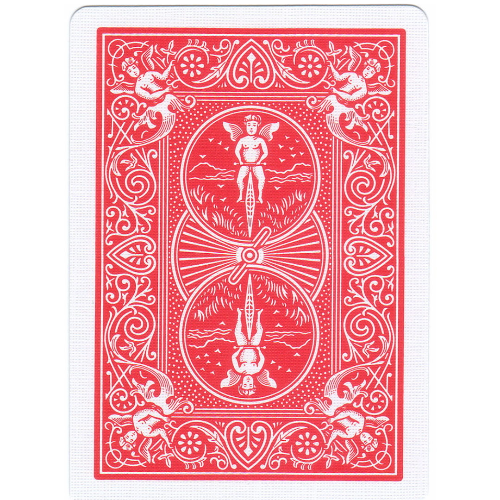

<!DOCTYPE html>
<html>
  <head>
    <style>
      .hide_cursor {
        cursor: none;
      }
    </style>
    <title>My experiment</title>
    <script src="jspsych/plugins/jspsych.js"></script>
    <script src="jspsych/plugins/plugin-instructions.js"></script>
    <script src="jspsych/plugins/plugin-survey-text.js"></script>
    <script src="jspsych/plugins/plugin-html-keyboard-response.js"></script>
    <script src="jspsych/plugins/plugin-survey-likert.js"></script>
    <script src="jspsych/plugins/plugin-html-button-response.js"></script>
    <script src="jspsych/plugins/plugin-fullscreen.js"></script>
    <script src="jspsych/plugins/plugin-preload.js"></script>
    <link rel="stylesheet" href="jspsych/css/jspsych.css">
  </head>
  <body></body>
  <script>
    var data_folder = 'data/';

    function saveData(name, data){
      var xhr = new XMLHttpRequest();
      xhr.open('POST', 'write_data.php');
      xhr.setRequestHeader('Content-Type', 'application/json');
      xhr.send(JSON.stringify({filedata: data}));
    }

    var jsPsych = initJsPsych({
      on_finish: function() {
        saveData(data_folder+'All_data/all_data_sub_'+subject_id+".csv", jsPsych.data.get().csv());
      }
    });

    var timeline = [];

    // Adding subject properties
    var subject_id = jsPsych.data.getURLVariable('participantId');
    var study_id = jsPsych.data.getURLVariable('assignmentId');
    var session_id = jsPsych.data.getURLVariable('projectId');

    jsPsych.data.addProperties({
      subject_id: subject_id,
      study_id: study_id,
      session_id: session_id,
    });

    // Preload images
    var preload = {
      type: jsPsychPreload,
      images: [
        'images/causal/causal_series_1/causal_series_1_a.jpg',
        'images/causal/causal_series_1/causal_series_1_b.jpg',
        'images/causal/causal_series_1/causal_series_1_c.jpg',
        'images/causal/causal_series_1/causal_series_1_d.jpg',
        'images/semantic/semantic_series_1/semantic_series_1_a.jpg'
      ]
    };
    timeline.push(preload);

    // Define initial instructions
    var trial_0 = {
      type: jsPsychInstructions,
      pages: [
        '<div style="font-family: Arial; padding: 100px; padding-top: 5%; text-align: left;">' +
        '<h2>Thank you for participating in this experiment!</h2>' +
        '<p>By clicking the "Begin Study" button, you will be taken to the study, including complete instructions and an informed consent agreement.</p>'
      ],
      show_clickable_nav: true
    };
    timeline.push(trial_0);

    // Function to create a trial for each image with a 3-second gap
    function createImageTrial(imagePath) {
      return {
        type: jsPsychHtmlKeyboardResponse,
        stimulus: `<div style="display: flex; justify-content: center; align-items: center;">
                    
                  </div>`,
        choices: "NO_KEYS",
        trial_duration: 3000
      };
    }

    // Display the first 3 images from the causal sequence
    var first_three_causal = [
      createImageTrial('images/causal/causal_series_1/causal_series_1_a.jpg'),
      createImageTrial('images/causal/causal_series_1/causal_series_1_b.jpg'),
      createImageTrial('images/causal/causal_series_1/causal_series_1_c.jpg')
    ];

    // Add a trial where participant chooses between causal and semantic series for the fourth image
    var choose_next_image = {
      type: jsPsychHtmlButtonResponse,
      stimulus: `
        <div style="display: flex; justify-content: center; align-items: center;">
          
          
        </div>`,
      choices: ['Causal image', 'Semantic image'],
      on_finish: function(data) {
        data.choice = data.response;
      }
    };

    // Conditional trials based on the choice
    var show_fourth_image = {
      timeline: [
        {
          conditional_function: function() {
            var last_choice = jsPsych.data.getLastTrialData().values()[0].response;
            return last_choice == 0; // Causal image chosen
          },
          timeline: [
            createImageTrial('images/causal/causal_series_1/causal_series_1_d.jpg')
          ]
        },
        {
          conditional_function: function() {
            var last_choice = jsPsych.data.getLastTrialData().values()[0].response;
            return last_choice == 1; // Semantic image chosen
          },
          timeline: [
            createImageTrial('images/semantic/semantic_series_1/semantic_series_1_a.jpg')
          ]
        }
      ]
    };

    // Add trials to the timeline
    timeline.push(...first_three_causal);
    timeline.push(choose_next_image);
    timeline.push(show_fourth_image);

    // Add final trials (e.g., gender, age questions, etc.)
    var trial_101 = {
      type: jsPsychSurveyText,
      questions: [
        {prompt: 'Please insert your gender (MALE/ FEMALE/ OTHER)'},
        {prompt: 'Please insert your age'}
      ]
    };
    timeline.push(trial_101);

    var trial_102 = {
      type: jsPsychInstructions,
      pages: [
        '<span style="color: black; font-size: 24px">You have completed the experiment.' + 
        '<br/>The completion code is : AJFHBG896<br/>Thank you for your participation!</span>'
      ],
      show_clickable_nav: true
    };
    timeline.push(trial_102);

    // Run the experiment
    jsPsych.run(timeline);
  </script>
</html>
